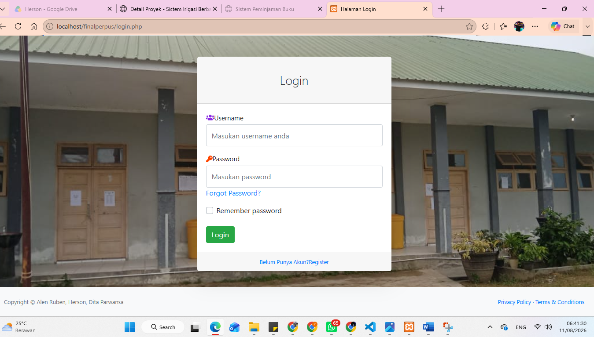
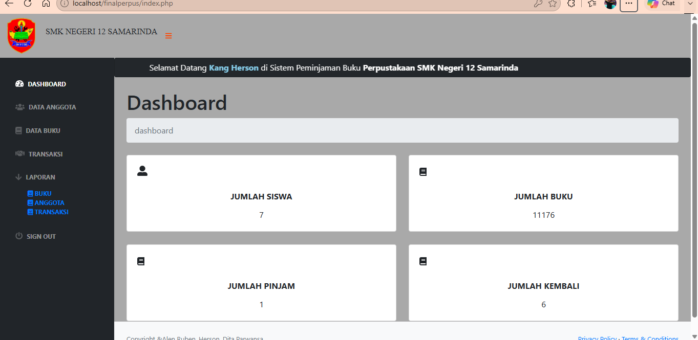

DETAIL PROYEK / 01
Website Peminjaman Buku Perpustakaan SMK Negeri 12 Samarinda
DESKRIPSI PROYEK
Project ini adalah project secara berkelompok, dimana kami memilih project website peminajman buku untuk sekolah di SMK Negeri 12 Samarinda yang berlokasi di Jl. Ekonomi No.69, Loa Buah, Kec. Sungai Kunjang, Kota Samarinda, Kalimantan Timur. Tujuan ini agar fasilitas perpustakaan di sekolah menggunakan sistem peminjaman hanya lewat website bukan lewat catatan manual. Dalam pengembangan webiste ini kami menggunakan bahasa CSS, HTML, Javascript, PHP, dan MySQL sebagai penyimpanan database.
FITUR UTAMA
- Manajemen anggota perpustakaan
- Manajemen data buku perpustakaan
- Menghitung berapa anggota perpustakaan, buku yang dipinjam, buku yang dikembalikan, dan total buku yang ada di perpustakaan lewat data di dashboard secara real time.
- Manajemen dalam peminjaman buku
- Sistem pengembalian buku
- Laporan data buku dan transaksi.
PERANCANGAN SISTEM
Flowchart

ERD (Entity Relationship Diagram)

Desain Database

Desain Tabel Database
Tabel User

Tabel Anggota

Tabel Buku

Tabel transaksi

Tampilan Website
Berikut adalah Tampilan Website Peminjaman Buku Perpustakaan SMK Negeri 12 Samarinda
Login dan Dashboard


Halaman menu dan cetak


ALAT & TEKNOLOGI
JOB DESK / PERAN
- Membuat program back end dengan menggunakan PHP
- Membuat pembuatan database untuk menghubungkan dengan program pada front end
- Melakukan perbaikan error pada program dan bug yang masih ada di website
- Melakuakan pengujian website
Hasil Project
Website perpustakaan berhasil dibuat dengan fitur pengelolaan data buku, data anggota, transaksi peminjaman, dan pengembalian buku. Sistem menggunakan database MySQL untuk menyimpan data perpustakaan dan menampilkan informasi melalui dashboard admin berbasis web.